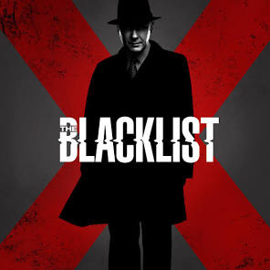

1. blacklist
A breathtaking story about science, survival, and human connection across space and time.
← Swipe left or right to browse all 5 series →

A breathtaking story about science, survival, and human connection across space and time.

it follows a covert CIA initiative that recruits and embeds female operatives undercover to infiltrate high-value targets and terrorist.

The show follows Portland homicide detective Nick Burkhardt (David Giuntoli). He discovers he descends from "Grimms," an ancient line of guardians who protect humanity from Wesen—mythological, part-human, part-animal creatures inspired by classic Brothers Grimm fairy tales and wider folklore. Nick's ability lets him see Wesen in their true forms while balancing police work with supernatural threats.

American action-crime television series on Amazon Prime Video starring Alan Ritchson as former U.S. Army military police major Jack Reacher, adapted from Lee Child's novels and developed by Nick Santora.

American action-crime television series on Prime Video starring Maria Sten as Frances Neagley, a Chicago private investigator and former military colleague of Jack Reacher
The soundtrack that keeps me focused during study and writing sessions:
Listen to My Playlist